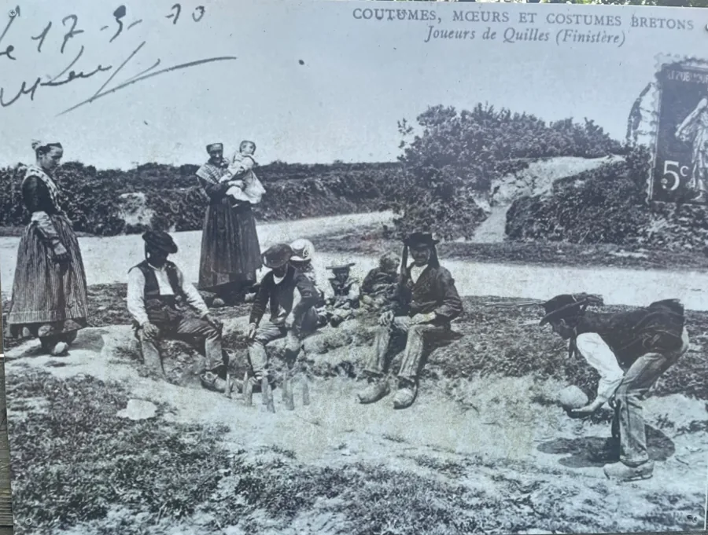
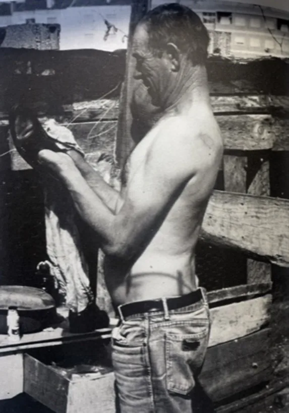
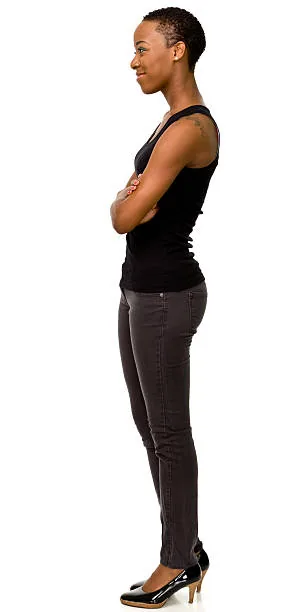
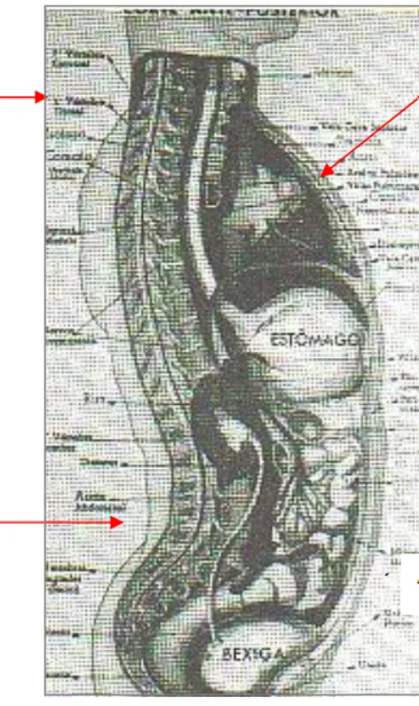
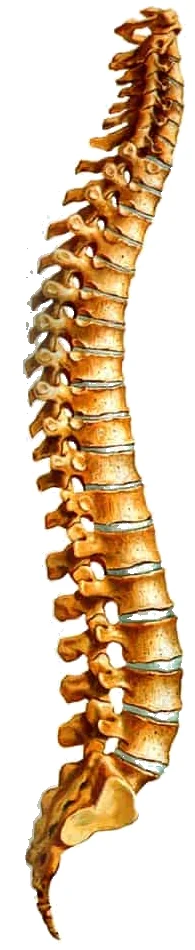
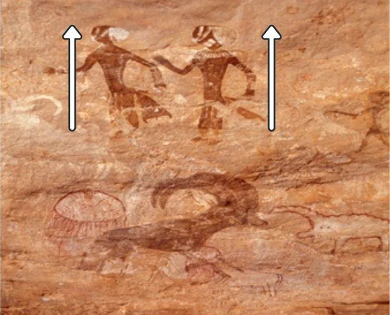
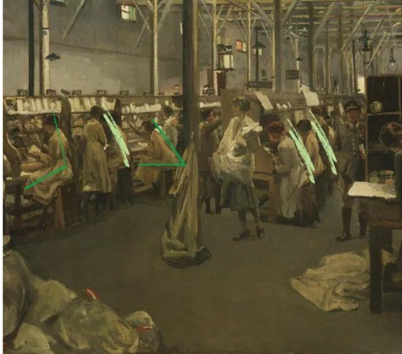
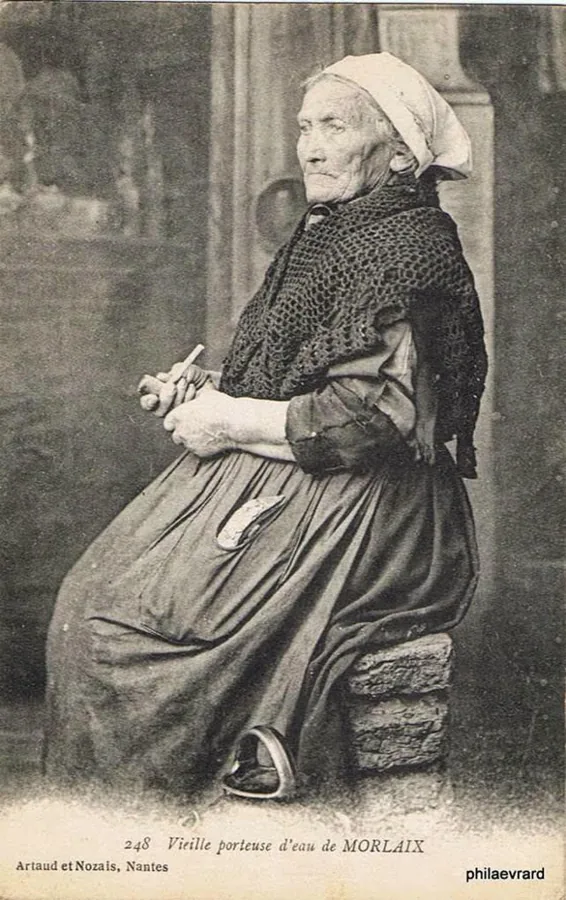

La démonstration
Cinq étapes, du plus général au plus précis. Cliquez sur un résumé pour afficher les preuves.
1. Le corps se façonne selon le milieu matériel
Pour André-Georges Haudricourt, la technique est d'abord un système de mouvements du corps, appris et transmis, et conditionné par l'environnement matériel : sol, mobilier, outils. Là où l'on travaille au niveau du sol, les postures et les gestes ne sont pas ceux d'une personne assise sur une chaise devant une table haute.
Sources : Haudricourt, La Technologie, science humaine (1987) et Des gestes aux techniques (2010) ; Sigaut, Comment Homo devint faber (2012).
2. S'asseoir sur une chaise est une exception historique
L'anthropologue Gordon Hewes a recensé les postures habituelles de nombreuses cultures du monde : accroupi, assis au sol, jambes croisées ou allongées, debout. L'assise sur siège haut y apparaît comme une habitude minoritaire à l'échelle de l'histoire humaine. D'autres travaux retracent l'arrivée progressive de la chaise et du mobilier moderne dans les modes de vie occidentaux.
Le problème de l'assise sur chaise
Pour Siegfried Giedion, le corps occidental, encadré par le meuble, a pris une rigidité posturale que n'ont pas les cultures sans mobilier haut, qui gardent leur souplesse articulaire (La Mécanisation au pouvoir, 1948). Galen Cranz va jusqu'à la cause : selon elle, c'est l'usage de la chaise qui a fait perdre de la mobilité aux hanches, aux chevilles et aux orteils des Occidentaux (The Chair, 1998).

Sources : Hewes (1955) ; Rybczynski, Now I Sit Me Down (2016) ; Giedion, La Mécanisation au pouvoir (1948) ; Cranz, The Chair (1998).
3. La colonne vertébrale n'est plus la même qu'avant l'ère industrielle
C'est la preuve centrale : on compare directement des os.
- Des squelettes archéologiques préindustriels et des cadavres postindustriels diffèrent de façon significative par l'inclinaison des vertèbres (« coin vertébral ») et l'orientation de leurs facettes articulaires (Williams et al., 2022).
- Des vertèbres lombaires (L4) de Polonais médiévaux (92 individus) comparées à des scanners de contemporains (100 individus) montrent un corps vertébral plus petit aujourd'hui, ce que les auteurs interprètent comme un amincissement lié à une moindre charge mécanique (Gratkowska et al., 2026).
- Des facettes osseuses d'accroupissement, laissées par la posture accroupie répétée, ont été décrites sur des squelettes anciens : la posture habituelle laisse une trace dans l'os (Trinkaus, 1975).
Les mécanismes avancés : moins d'activité, assise prolongée sur mobilier, disparition de l'accroupissement. Le squelette réagit surtout aux charges subies pendant la croissance et jusqu'au début de l'âge adulte.
Des corps différents


La colonne vue de profil


La planche moderne est retournée horizontalement, sans ses légendes, pour être orientée comme celle de 1934. Ces images sont des représentations, pas des mesures : elles servent à comparer visuellement.
Un sommet de cambrure plus bas
D'après les observations de l'anthropologue Noëlle Perez-Christiaens, réalisées auprès d'ouvriers et de paysans, le point le plus creux de la cambrure lombaire se situait autrefois plus bas dans la région lombaire qu'aujourd'hui, comme le montre l'image 1934. (coupe tirée de L'Anatomie en poche, V. Pauchet et S. Dupret) (Perez-Christiaens, 2008).
Cette thèse (EHESS, 2008, sous la direction de François Sigaut) n'est pas disponible en ligne : seule sa notice est consultable.
4. Les postures représentées dans l'art ont changé
Une analyse visuelle qualitative d'œuvres d'art de trois périodes (chasseurs-cueilleurs, agriculture, ère postindustrielle) montre un glissement des postures représentées. Les figures des peintures rupestres sont debout, sans assise prolongée ni flexion vers l'avant observées. Dans les œuvres agricoles puis industrielles, on voit davantage de personnes assises, penchées ou en flexion, souvent de façon prolongée (Taçyıldız et al., 2026).
Cette lecture est à rapprocher de l'inventaire des postures de Hewes (étape 2) : à l'échelle des cultures du monde, l'assise sur siège haut apparaît comme une habitude minoritaire (Hewes, 1955). L'un procède par l'ethnographie, l'autre par les images, et tous deux invitent à ne pas prendre la posture assise moderne pour une norme ancienne.


Images extraites d'un article en accès libre sous licence CC BY 4.0, recadrées. Il s'agit d'une lecture qualitative d'œuvres choisies par les auteurs, pas d'une mesure : les artistes ont pu styliser leurs sujets, et aucune autre étude confirmant ce point n'est citée ici.
L'assise, d'hier à aujourd'hui

5. Ce changement vient du mode de vie, pas de la génétique
Dans l'étude de Williams et al., aucune différence significative n'apparaît selon la géographie parmi les échantillons préindustriels, ni selon l'ascendance parmi les postindustriels. Les auteurs y voient de la plasticité plutôt qu'un effet d'ascendance : le corps s'adapte à la manière dont on vit.
Source : Williams et al. (2022).
Ce que cela montre : les corps que la médecine moderne observe et soigne sont déjà différents de ceux d'avant l'industrialisation. Le problème de sédentarité n'est pas récent : il accompagne le mode de vie industriel depuis ses débuts.
Ce que ces études ne disent pas
- Les échantillons comparés (cadavres modernes et squelettes archéologiques) n'ont pas la même conservation ni la même composition, et le groupe préindustriel est petit.
- Les différences entre populations peuvent être aussi grandes que celles dues au mode de vie (Zlolniski et al., 2019).
- Le lien entre ces différences de forme et les problèmes de santé reste une hypothèse.
Et la médecine aujourd'hui ?
La médecine tire déjà la sonnette d'alarme. D'après l'Observatoire national de l'activité physique et de la sédentarité (ONAPS) et l'Agence nationale de sécurité sanitaire (ANSES) :
- les adultes passent en moyenne 12 heures par jour assis les jours travaillés ;
- 73 % des jeunes de 11 à 17 ans n'atteignent pas les recommandations d'activité physique ;
- 95 % des Français ne respectent pas les recommandations en matière d'activité physique (ANSES).
Ce que montrent les squelettes : ce constat s'inscrit dans une histoire bien plus longue que celle des écrans.
Références
- Williams, S. A., et al. (2022). Inferring lumbar lordosis in Neandertals and other hominins. PNAS Nexus, 1, pgab005. doi:10.1093/pnasnexus/pgab005
- Gratkowska, M., Krenz-Niedbała, M., & Koszewicz, M. (2026). Geometric variability of the lumbar spine from medieval to modern times. Anthropologiai Közlemények. doi:10.20330/anthropkozl.2026.67s.57
- Perez-Christiaens, N. (2008). Porter sur soi : se porter, porter, se comporter, transporter, se charger et se décharger sans dommage : contribution à l'étude d'une catégorie universelle de techniques : le transport des charges sur soi. Thèse d'anthropologie sociale et ethnologie, EHESS (dir. F. Sigaut). Non disponible en ligne. Notice theses.fr
- Taçyıldız, A. E., Sofuoğlu, Ö. E., Apaydın, A. S., & Üçer, M. (2026). Viewing low back pain through the lens of spinal evolution: understanding the morphology and limits of the human spine. PLOS ONE. doi:10.1371/journal.pone.0339032
- Zlolniski, S. L., et al. (2019). 3D geometric morphometric analysis of variation in the human lumbar spine. American Journal of Physical Anthropology, 170, 361-372. doi:10.1002/ajpa.23918
- Hewes, G. W. (1955). World distribution of certain postural habits. American Anthropologist, 57(2). doi:10.1525/aa.1955.57.2.02a00040
- Trinkaus, E. (1975). Squatting among the Neandertals: a problem in the behavioral interpretation of skeletal morphology. Journal of Archaeological Science, 2. doi:10.1016/0305-4403(75)90005-9
- Haudricourt, A.-G. (1987). La Technologie, science humaine. André-Georges Haudricourt sur Wikipédia
- Haudricourt, A.-G. (2010). Des gestes aux techniques. André-Georges Haudricourt sur Wikipédia
- Sigaut, F. (2012). Comment Homo devint faber. Page de l'éditeur (CNRS Éditions)
- Rybczynski, W. (2016). Now I Sit Me Down: From Klismos to Plastic Chair. Witold Rybczynski sur Wikipédia
- Giedion, S. (1948). Mechanization Takes Command (trad. fr. La Mécanisation au pouvoir). Wikipédia
- Pauchet, V., & Dupret, S. (1934). L'Anatomie en poche. Victor Pauchet sur Wikipédia
- Cranz, G. (1998). The Chair: Rethinking Culture, Body, and Design. Galen Cranz sur Wikipédia
- ANSES. Manque d'activité physique et excès de sédentarité : une priorité de santé publique.
- ONAPS. L'activité physique et la sédentarité en France : les chiffres clés.